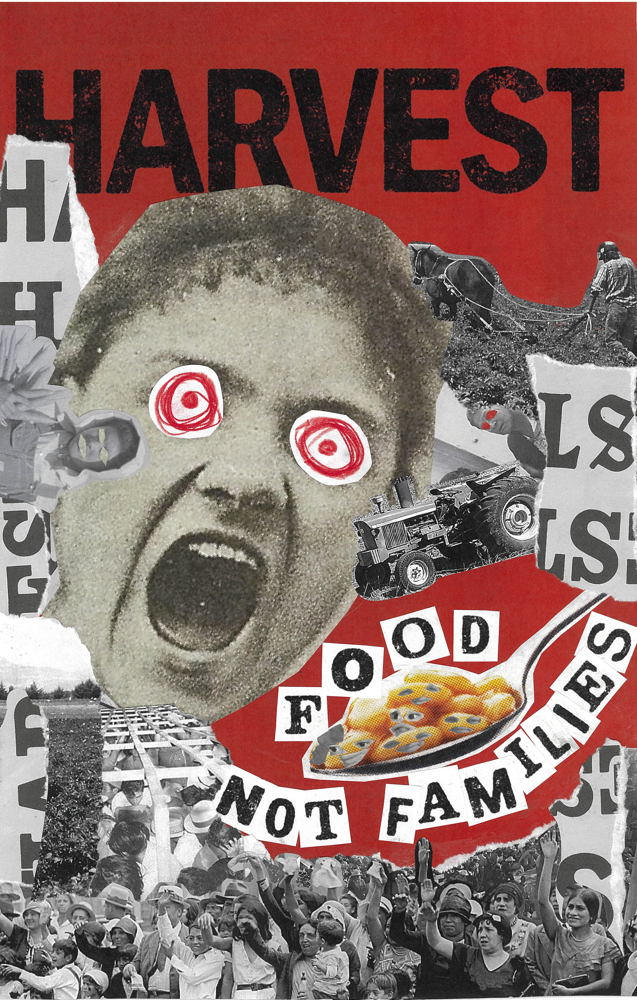

Case Study · Design · 2025
Visual Design Response
This protest poster applies Dada's photomontage techniques and anti-establishment principles to contemporary immigration issues. The design channels the movement's chaotic visual language and political urgency to critique systems of power and advocate for human rights.

Concept
Design Approach
Following Hannah Höch and Raoul Hausmann's photomontage methods, the poster layers fragmented images, clipped text, and disjointed typography to create visual disruption. Collaged imagery confronts the viewer with jarring juxtapositions that reflect the fractured experience of displacement. The intentionally chaotic composition mirrors Dada's rejection of aesthetic convention, using disorder as a tool for political commentary. Typography is deliberately unstable—overlapping, rotating, and colliding—to convey urgency and resistance.
Result
The poster demonstrates how Dada's radical visual strategies remain relevant for contemporary activism. The layered, confrontational design forces viewers to engage with uncomfortable realities, proving that historical avant-garde techniques can effectively communicate modern social justice messages.